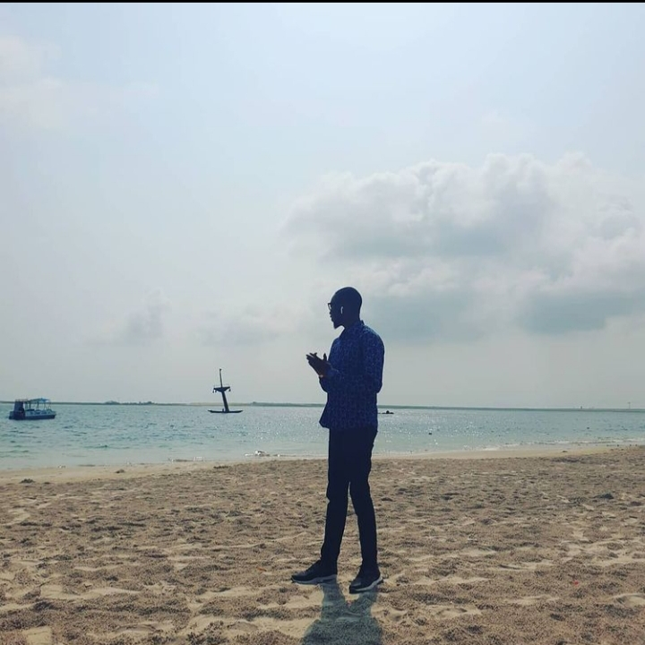

I'm a junior at Stanford studying Product Design. I'm passionate about applying my creativity to product experiences, visual design, and design leadership. I've previously done projects for digital, hardware, and services alike.
I deeply value human-centered design that's impactful, beautiful, and practical at scale. I'm always looking for opportunities to do work with people that embrace the same ideals. I'm a junior at Stanford studying Product Design. I'm passionate about applying my creativity to product experiences, visual design, and design leadership. I've previously done projects for digital, hardware, and services alike.
I deeply value human-centered design that's impactful, beautiful, and practical at scale. I'm always looking for opportunities to do work with people that embrace the same ideals. I'm a junior at Stanford studying Product Design. I'm passionate about applying my creativity to product experiences, visual design, and design leadership. I've previously done projects for digital, hardware, and services alike.
I deeply value human-centered design that's impactful, beautiful, and practical at scale. I'm always looking for opportunities to do work with people that embrace the same ideals.
